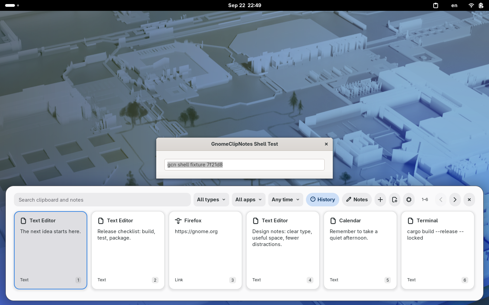
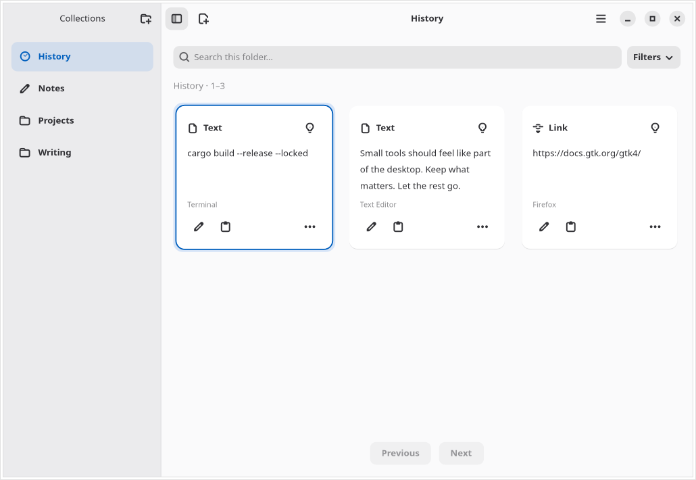

Find it again
A bottom clipboard panel with search, filters and keyboard navigation. Keep your work in view.
GNOME · Wayland · Local first
A clipboard is a starting point. Turn useful fragments into notes, organize them into folders, and take them further as readable Markdown.
Installation guideExplore the project →
1.0.0 is in preparation. No public release is available yet.
Capture → Curate → Organize → Export → Develop → Reuse
A bottom clipboard panel with search, filters and keyboard navigation. Keep your work in view.
Notes and custom folders stay separate from expiring History. Edit Markdown with a lightweight Native or rich Full preview.
Export selected collections as readable Markdown. Develop ideas in the tools you already use. No account or cloud service required.


Real development-build screenshots from isolated test sessions, using synthetic notes — not personal clipboard contents.
Not published yet: the commands and download links below describe the planned 1.0.0 release. They are not currently available release endpoints.
After publication, the same command will install the app or update an existing managed installation:
curl -fsSL https://raw.githubusercontent.com/OleksiyM/GnomeClipNotes/main/install.sh | bashThe installer checks download integrity and asks before changing anything installed. Missing system packages require separate consent. GitHub CLI is optional for stronger provenance verification.
Verification and inspect-first alternative · Release downloads
Fedora 44 / x86_64 is locally exercised. Ubuntu 24.04 / x86_64 is an untested candidate. No claim of universal Linux compatibility.
Local SQLite storage. Plain text and Markdown. No automatic update requests. Capture exclusions help, but cannot recognize every secret: pause capture when needed.